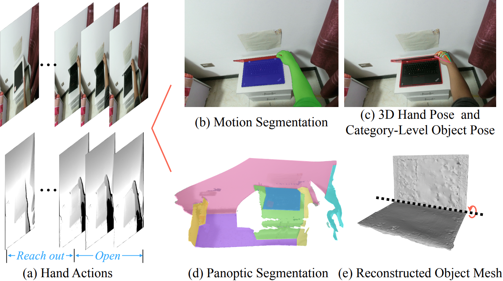

We present HOI4D, a large-scale 4D egocentric dataset with rich annotations, to catalyze the research of category-level human-object interaction. HOI4D consists of 2.4M RGB-D egocentric video frames over 4000 sequences collected by 9 participants interacting with 800 different object instances from 16 categories over 610 different indoor rooms. Frame-wise annotations for panoptic segmentation, motion segmentation, 3D hand pose, category-level object pose and hand action have also been provided, together with reconstructed object meshes and scene point clouds. With HOI4D, we establish three benchmarking tasks to promote category-level HOI from 4D visual signals including semantic segmentation of 4D dynamic point cloud sequences, category-level object pose tracking, and egocentric action segmentation with diverse interaction targets. In-depth analysis shows HOI4D poses great challenges to existing methods and produces great research opportunities.
We construct a large-scale 4D egocentric dataset with rich annotation for category-level human-object interaction. Frame-wise annotations for action segmentation(a), motion segmentation(b), panoptic segmentation(d), 3D hand pose and category-level object pose(c) are provided, together with reconstructed object meshes(e) and scene point cloud.

Downloads:
Code & Tasks:
If you find our work useful in your research, please consider citing:
@InProceedings{Liu_2022_CVPR,
author = {Liu, Yunze and Liu, Yun and Jiang, Che and Lyu, Kangbo and Wan, Weikang and Shen, Hao and Liang, Boqiang and Fu, Zhoujie and Wang, He and Yi, Li},
title = {HOI4D: A 4D Egocentric Dataset for Category-Level Human-Object Interaction},
booktitle = {Proceedings of the IEEE/CVF Conference on Computer Vision and Pattern Recognition (CVPR)},
month = {June},
year = {2022},
pages = {21013-21022}
}